Einteilung der Enzyklopädie-Artikel in Kategorien
Diese Seite ordnet die meisten Enzyklopädie-Artikel in eine oder mehrere Kategorien ein. Auf diese Weise können verwandte Artikel leichter gefunden werden.
General optics
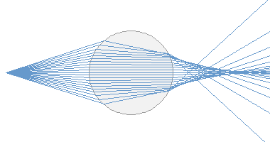
Abbe number
ABCD matrix
aberrations → optical aberrations
absorbance
absorbing coatings → black coatings
absorptance
absorption
absorption coefficient
absorption length
absorptivity → absorptance
achromatic lenses → lenses
achromatic optics
actinometry
adjoint modes → resonator modes
afocal optical systems
aluminum mirrors → metal-coated mirrors
anamorphic prism pairs
anamorphic prisms → prisms
anomalous dispersion → dispersion
aperture stops
apochromats → achromatic optics
aspheric lenses → aspheric optics
aspheric optics
astigmatism
attenuation coefficient → absorption coefficient
autocollimators
axial modes → resonator modes
axicons
ball lenses
beam collimation → collimated beams
beam collimators
beam diameter → beam radius
beam distortions → beam quality
beam divergence
beam expanders
beam focus → beam waist
beam homogenizers
beam parameter product
beam propagation factor → M2 factor
beam quality
beam quality factor → M2 factor
beam radius
beam splitters
beam viewing cards → laser viewing cards
beam waist
beat length → polarization beat length
Beer–Lambert law
binoculars → telescopes
birefringence
birefringent polarizers → polarizers
black coatings
blazed gratings → diffraction gratings
Bragg gratings
Brewster plates
Brewster windows
Brewster's angle
brightness
cardinal points
caustic → beam quality
cavities
cavity bandwidth → resonator modes
cavity modes → resonator modes
cavity resonances → resonator modes
chirped mirrors
chromatic aberrations
chromatic dispersion
circle of confusion → imaging with a lens
cleaner cavities → mode cleaners
cleaning of optics
coherence
coherence function → coherence time
coherence length
coherence time
collimated beams
collimation optics → collimated beams
coma → optical aberrations
complex degree of temporal coherence → coherence time
complex reflection coefficient → reflectivity
complex refractive index → refractive index
condensers
confocal parameter → Rayleigh length
constringence → Abbe number
corner cube prisms
custom optics
cylindrical lenses
D4σ method → beam radius
deformable mirrors
delay lines → optical delay lines
demagnification → magnification
depth of field
depth of focus
detector cards → laser viewing cards
diameter–divergence product
diameter of laser beam → beam radius
diattenuation → dichroism
dichroism
diffraction
diffraction gratings
diffraction-limited beams
diffractive beamsplitters → diffractive optics
diffractive lenses → diffractive optics
diffractive optics
diffuse scattering → scattering
diffusers
diopters → dioptric power
dioptric power
dispersion
dispersion relations → Kramers–Kronig relations
dispersive delay lines → optical delay lines
dispersive mirrors
dispersive spectral analysis → spectrometers
divergence angle → beam divergence
domes → optical domes
double-chirped mirrors → chirped mirrors
double refraction → birefringence
dynamically unstable resonators → unstable resonators
echelette gratings → diffraction gratings
effective Rayleigh length → Rayleigh length
elastic scattering → scattering
emission spectrum → optical spectrum
emissivity
entangled states → photons
entrance and exit pupil
exit pupil → entrance and exit pupil
extinction ratio → polarization of light
f–theta lenses → scanning lenses
f-number
f-stop number → f-number
Faraday isolators
Faraday rotators
fast light → superluminal transmission
faster than light → superluminal transmission
field curvature → optical aberrations
field stops
first surface mirrors
flat-top beams
fluence
focal distance
focal length
focal points and focal planes
focus → beam waist
focusing power → focal length
Fourier optics
free-space modes → modes
Fresnel equations
Fresnel lenses
Fresnel number
Fresnel reflections
front surface mirrors → first surface mirrors
Gaussian beams
Gaussian mirrors → variable reflectivity mirrors
Gaussian optics
geometrical optics
gold mirrors → metal-coated mirrors
Gouy phase shift
graded reflectivity mirrors → variable reflectivity mirrors
gradient-index filters → rugate filters
gradient-index lenses
gratings → diffraction gratings
group delay
group delay dispersion
group index
group refractive index → group index
group velocity
group velocity dispersion
guided modes → modes
half-wave plates → waveplates
hand lenses → magnifying glasses
heat radiation → infrared light
Hermite–Gaussian modes
higher-order dispersion → dispersion
higher-order modes
holographic gratings → diffraction gratings
holography
hyperfocal distance
image distortion → optical aberrations
image planes
image space → object and image space
imaging
imaging with a lens
index matching fluids
index of refraction → refractive index
inelastic scattering → scattering
infrared absorption → absorption
infrared detector cards → laser viewing cards
infrared light
infrared optics
infrared sensor cards → laser viewing cards
insertion loss
instantaneous frequency
intensity → optical intensity
interference
interference filters
intermediate image planes → image planes
irradiance
k vector → wave vector
Kramers–Kronig relations
Lambertian emitters and scatterers
laser beam quality → beam quality
laser beams
laser diode collimators
laser light
laser line optics
laser line polarizers → thin-film polarizers
laser optics
laser radiation → laser light
laser speckle
laser viewing cards
lateral modes → higher-order modes
law of Snellius → refraction
left-handed metamaterials → photonic metamaterials
lens arrays → microlens arrays
lens speed → f-number
lenses
light
light absorption → absorption
light diffusers → diffusers
light intensity → optical intensity
linear absorption → absorption
linear polarization → polarization of light
linear polarizers → polarizers
linear resonators → standing-wave resonators
Littrow gratings → diffraction gratings
loupes
M2 factor
magnification
magnifying glasses
manufacturing of optics → optical fabrication
metal-coated mirrors
metamaterials → photonic metamaterials
microcavities → cavities
microlens arrays
microlenses
mirror-like reflection → specular reflection
mirrors
mm mrad → beam parameter product
mode cleaners
mode matching
modes
monochromatic light
monochromators
monochromators → spectrometers
multimode beams
near field and far field
negative-index materials → photonic metamaterials
neutral density filters
Nipkow discs → pinholes
nodal points
normal dispersion → dispersion
numerical aperture
object and image space
objective lenses → objectives
objectives
optical aberrations
optical absorption → absorption
optical activity
optical breadboards
optical cavities → cavities
optical delay lines
optical density
optical diffusers → diffusers
optical domes
optical fabrication
optical flats
optical fluence → fluence
optical frequency
optical images → imaging
optical imaging → imaging
optical intensity
optical interference → interference
optical isolators → Faraday isolators
optical materials
optical mirrors → mirrors
optical phase
optical power
optical retardance → retardance
optical return loss → return loss
optical slits
optical spaces → object and image space
optical spectrum
optical spectrum analyzers
optical tables
optical thickness
optical wavelength → wavelength
optical windows
optics
optics cleaning → cleaning of optics
optics for lasers → laser optics
opto-mechanics
parabolic mirrors
parasitic absorption → absorption
paraxial approximation
perfect diffusion → Lambertian emitters and scatterers
phase → optical phase
phase coherence → coherence
phase velocity
photometry
photonic metamaterials
photons
physical optics → wave optics
pinholes
plane waves
plastic optics
plate beam splitters → beam splitters
polarization beam combining
polarization beat length
polarization coupling → polarization beam combining
polarization extinction ratio → polarization of light
polarization of light
polarization rotators → Faraday rotators
polarizers
polarizing beam splitters → polarizers
polarizing cubes → thin-film polarizers
Polaroid filters → polarizers
polychromatic light
polymer optics → plastic optics
power splitters → beam splitters
principal dispersion
principal points and principal planes
prism-based beam expanders → anamorphic prism pairs
prism pairs
prism retroreflectors → prisms
prisms
propagation losses
protected metal-coated mirrors → first surface mirrors
pupils → entrance and exit pupil
q parameter → Gaussian beams
quarter-wave plates → waveplates
quasi-monochromatic light → monochromatic light
radiance
radiant energy
radiant flux
radiant intensity
radiant power → radiant flux
radiometers → radiometry
radiometry
radius of laser beam → beam radius
ray optics → geometrical optics
ray transfer matrix → ABCD matrix
Rayleigh length
Rayleigh scattering
references surfaces → optical flats
reflectance
reflection coefficient of an interface → Fresnel equations
reflection gratings → diffraction gratings
reflectivity
refraction
refractive index
refractive index fluids → index matching fluids
regular reflection → specular reflection
residual absorption → absorption
resonator bandwidth → resonator modes
resonator modes
retardance
retarders → retardance
retroreflecting prisms → corner cube prisms
retroreflectors
return loss
rod lenses
rugate filters
scanning delay lines → optical delay lines
scanning lenses
scanning spectrometers → spectrometers
scattering
second-order dispersion → group delay dispersion
Sellmeier formula
sensor cards → laser viewing cards
sheet polarizers → polarizers
silicone optics → plastic optics
silver mirrors → metal-coated mirrors
slow light → velocity of light
Snell's law → refraction
spatial coherence → coherence
spatial filters → mode cleaners
spatial frequencies → Fourier optics
speckle → laser speckle
spectral beam combining
spectral flux → radiant flux
spectral intensity → radiant intensity
spectral lines
spectral radiance → radiance
spectrographs
spectrometers
spectrophotometers
spectroradiometers → spectrometers
spectrum → optical spectrum
specular reflection
speed of light → velocity of light
spherical aberrations
standard spectral lines
standing wave pattern → interference
standing-wave resonators
super-black coatings → black coatings
superluminal transmission
telecentric lenses
telescopes
TEM modes → resonator modes
temporal coherence → coherence
thin-film polarizers
top-hat beams → flat-top beams
transmission gratings → diffraction gratings
transmission loss → insertion loss
transmissivity
transmittance
transverse modes → higher-order modes
trihedral prisms → corner cube prisms
ultraviolet absorption → absorption
ultraviolet light
ultraviolet optics
unstable resonators
UV-enhanced aluminum mirrors → first surface mirrors
V number of a dispersive material → Abbe number
vacuum velocity of light → velocity of light
vacuum wavelength → wavelength
vacuum windows → optical windows
variable reflectivity mirrors
velocity of light
visible light → light
waist radius → beam waist
wave optics
wave vector
wavefront distortions → beam quality
wavefronts
waveguide modes → modes
wavelength
wavelength beam combining → spectral beam combining
wavenumber
waveplates
wedge prisms
white light
wire grid polarizers → polarizers
working distance
zero dispersion wavelength
Optical materials
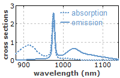
absorbing coatings → black coatings
active laser media → gain media
amplifier fibers → rare-earth-doped fibers
amplifying fibers → rare-earth-doped fibers
black coatings
ceramic gain media
chromium-doped gain media
clustering
composite laser crystals
concentration of dopant → doping concentration
crown glasses
diffusion bonding → composite laser crystals
domain engineering → periodic poling
domain inversion → periodic poling
domain-patterned semiconductors → orientation-patterned semiconductors
doped fibers → rare-earth-doped fibers
doped insulator lasers
doping concentration
electric-field poling → periodic poling
erbium-doped fibers → rare-earth-doped fibers
erbium-doped gain media
ferroelectric domain engineering → periodic poling
flint glasses
fluoride fibers
fluoride glasses
fluorozirconate fibers → fluoride fibers
forsterite crystals → chromium-doped gain media
four-level and three-level gain media
fused silica fibers → silica fibers
gain media
gray tracking → photodarkening
green-induced infrared absorption → photodarkening
ground state laser transitions → four-level and three-level gain media
heavy metal fluoride fibers → fluoride fibers
hybrid laser crystals → composite laser crystals
index matching fluids
infrared optics
lanthanide lasers → rare-earth-doped gain media
laser crystals
laser crystals versus glasses
laser fibers → rare-earth-doped fibers
laser gain media → gain media
laser glasses → laser crystals versus glasses
laser media → gain media
left-handed metamaterials → photonic metamaterials
light-induced absorption → photodarkening
lithium niobate and tantalate → nonlinear crystal materials
manufacturing of optics → optical fabrication
metamaterials → photonic metamaterials
mirror substrates
Nd:YAG → YAG lasers
Nd:YLF → YLF lasers
Nd:YVO4 → vanadate lasers
negative-index materials → photonic metamaterials
neodymium-doped fibers → rare-earth-doped fibers
neodymium-doped gain media
nonlinear crystal materials
number density of dopant → doping concentration
OP-GaAs → orientation-patterned semiconductors
optical crystals
optical fabrication
optical glasses
orientation-patterned semiconductors
percentage of doping → doping concentration
periodic poling
phonon-terminated lasers → vibronic lasers
phosphate glasses
phosphors
photo-induced attenuation → photodarkening
photochromic damage → photodarkening
photochromic materials
photodarkening
photoinduced losses → photodarkening
photonic metamaterials
praseodymium-doped fibers → rare-earth-doped fibers
quasi-three-level lasers → four-level and three-level gain media
rare-earth-doped fibers
rare-earth-doped gain media
reabsorption in gain media → four-level and three-level gain media
refractive index fluids → index matching fluids
self-darkening materials → photochromic materials
silica fibers
super-black coatings → black coatings
three-level gain media → four-level and three-level gain media
thulium-doped fibers → rare-earth-doped fibers
transition-metal-doped gain media
transparency intensity → four-level and three-level gain media
tungstate lasers
vanadate lasers
vibronic lasers
YAG lasers
Yb:YAG, Yb:KGW, Yb:KYW, Yb:glass, … → ytterbium-doped gain media
YLF lasers
ytterbium-doped fibers → rare-earth-doped fibers
ytterbium-doped gain media
Fiber optics and waveguides
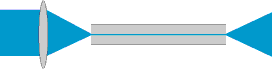
acceptance angle in fiber optics
active fibers
active optical cables → fiber-optic links
adiabatic soliton compression
air-guiding fibers → hollow-core fibers
amplifier fibers → rare-earth-doped fibers
amplifying fibers → rare-earth-doped fibers
angle cleaving → cleaving of fibers
aperiodic fiber gratings → fiber Bragg gratings
bandwidth–distance product
bat ear controllers → fiber polarization controllers
beat length → polarization beat length
bend losses
birefringent fibers → polarization-maintaining fibers
bound modes → guided waves
Bragg fibers → photonic bandgap fibers
Bragg grating sensors → fiber-optic sensors
Brillouin scattering
bulk lasers versus fiber lasers → fiber lasers versus bulk lasers
bundled fibers → fiber bundles
C band → optical fiber communications
chalcogenide fibers → mid-infrared fibers
channel waveguides
chemical vapor deposition → fiber fabrication
cladding → fiber cladding
cladding mode strippers
cladding modes
cladding-pumped fibers → double-clad fibers
cleavers → fiber cleavers
cleaving of fibers
connectors for fibers → fiber connectors
core → fiber core
core-less end caps
coupled-mode theory → mode coupling
crystalline fibers → single-crystal fibers
cut-off wavelength
depressed cladding → fiber cladding
depressed cladding → fibers
differential mode delay
dispersion-decreasing fibers
dispersion-flattened fibers → dispersion-shifted fibers
dispersion-shifted fibers
distributed amplifiers
distributed Bragg reflector lasers
distributed sensors → fiber-optic sensors
doped fiber amplifiers → fiber amplifiers
doped fibers → rare-earth-doped fibers
double-clad fibers
effective modal bandwidth → modal bandwidth
effective mode area
effective refractive index
effective step-index profile → step-index fibers
effectively single-mode fibers → single-mode fibers
elliptical core → polarization-maintaining fibers
endlessly single-mode fibers → photonic crystal fibers
erbium-doped fiber amplifiers
erbium-doped fibers → rare-earth-doped fibers
fabrication of optical fibers → fiber fabrication
femtosecond fiber lasers → mode-locked fiber lasers
few-mode fibers
fiber amplifiers
fiber Bragg gratings
fiber bundles
fiber cables
fiber cladding
fiber cleavers
fiber collimators
fiber connectors
fiber core
fiber-coupled diode lasers
fiber couplers
fiber coupling stages → fiber launch systems
fiber drawing towers → fiber fabrication
fiber end caps → core-less end caps
fiber fabrication
fiber fuse
fiber joints
fiber lasers
fiber lasers versus bulk lasers
fiber launch systems
fiber loop mirrors
fiber manufacturing → fiber fabrication
fiber modes → fibers
fiber-optic cables → fiber cables
fiber-optic communications → optical fiber communications
fiber-optic connectors → fiber connectors
fiber-optic links
fiber-optic networks
fiber-optic patch cords → fiber cables
fiber-optic plates
fiber-optic pump combiners
fiber-optic sensors
fiber-optic tapers
fiber optics
fiber patch cables
fiber polarization controllers
fiber preforms → fiber fabrication
fiber rods → fiber bundles
fiber sensors → fiber-optic sensors
fiber simulation software
fiber splices → fiber joints
fiber to the home
fibers
figure-of-eight laser → mode-locked fiber lasers
fluoride fibers
fluorozirconate fibers → fluoride fibers
free-space modes → modes
fused silica fibers → silica fibers
fusion splicing of fibers
Giles parameters
glass fibers → fibers
graded-index fibers
group velocity dispersion
guided modes → modes
guided waves
heavy metal fluoride fibers → fluoride fibers
high-power fiber lasers and amplifiers
higher-order modes
higher-order solitons
holey fibers → photonic crystal fibers
hollow-core fibers
index-depressed cladding → fiber cladding
infrared fibers → mid-infrared fibers
inner cladding → double-clad fibers
insertion loss
intermodal dispersion
L band → optical fiber communications
large-core fibers
large mode area fibers
laser fibers → rare-earth-doped fibers
lateral modes → higher-order modes
launching light into fibers → fiber launch systems
leaky modes
long-period fiber Bragg gratings → fiber Bragg gratings
LP modes
Marcuse formula → mode radius
master oscillator fiber amplifier
mechanical fiber splices
microbends of fibers
microstructure fibers → photonic crystal fibers
microwave over fiber → radio and microwave over fiber
mid-infrared fibers
misalignment of fibers → fiber joints
modal bandwidth
modal dispersion → intermodal dispersion
modal refractive index → effective refractive index
mode area → effective mode area
mode coupling
mode cut-off → cut-off wavelength
mode field converters
mode field diameter → mode radius
mode-locked fiber lasers
mode radius
mode solvers → fiber simulation software
mode strippers → cladding mode strippers
modes
modified chemical vapor deposition → fiber fabrication
monocrystalline fibers → single-crystal fibers
monomode fibers → single-mode fibers
multi-core fibers
multi-mode fibers → multimode fibers
multimode fibers
multimode pump combiners → fiber-optic pump combiners
multimode waveguides → waveguides
nanofibers
neodymium-doped fibers → rare-earth-doped fibers
nonlinear fiber loop mirrors → fiber loop mirrors
nonlinear polarization rotation
nonlinear pulse distortion
nonlinearities
normalized frequency → V number
numerical aperture
optical fiber cables → fiber cables
optical fiber communications
optical fiber sensors → fiber-optic sensors
optical fiber technology → fiber optics
optical fibers → fibers
optical frequency domain reflectometry → fiber-optic sensors
optical nanofibers → nanofibers
optical networks → fiber-optic networks
optical power monitors
optical strain sensors
optical temperature sensors
optical time-domain reflectometers
PANDA fibers → polarization-maintaining fibers
parabolic index fibers → graded-index fibers
passive fibers
patch cables → fiber patch cables
phase constant → propagation constant
phosphate glasses
photonic bandgap fibers
photonic crystal fibers
photonic power → power over fiber
photosensitivity → fiber Bragg gratings
pigtailed diode lasers → fiber-coupled diode lasers
planar waveguides
plasma deposition methods → fiber fabrication
plastic optical fibers
polarization beat length
polarization controllers → fiber polarization controllers
polarization-maintaining fibers
polarization mode dispersion
polarization-preserving fibers → polarization-maintaining fibers
polycrystalline fibers → mid-infrared fibers
polymer optical fibers → plastic optical fibers
power monitors → optical power monitors
power over fiber
praseodymium-doped fibers → rare-earth-doped fibers
precision fiber cleavers → fiber cleavers
preforms → fiber fabrication
propagation constant
pulse break-up → nonlinear pulse distortion
pump combiners → fiber-optic pump combiners
quasi-soliton pulses
radiation modes → cladding modes
radio and microwave over fiber
Raman amplifiers
Raman effect → Raman scattering
Raman scattering
rare-earth-doped fibers
rod-in-tube method → fiber fabrication
S band → optical fiber communications
sampled grating lasers → distributed Bragg reflector lasers
sapphire fibers → single-crystal fibers
self-phase modulation
semiconductor fiber lasers → fiber lasers
sensors → fiber-optic sensors
silica fibers
single-crystal fibers
single-mode cut-off → single-mode fibers
single-mode fibers
single-polarization fibers
solution doping → fiber fabrication
specialty fibers
splicing → fusion splicing of fibers
spontaneous Raman scattering → Raman scattering
step-index fibers
stimulated Brillouin scattering → Brillouin scattering
stimulated Raman scattering → Raman scattering
strain sensors → optical strain sensors
stress rods → polarization-maintaining fibers
stretched-pulse fiber lasers → mode-locked fiber lasers
tapered fibers
telecom fibers
telecom windows → optical fiber communications
temperature sensors → optical temperature sensors
thulium-doped fibers → rare-earth-doped fibers
tolerances for fiber coupling → fiber joints
transmission loss → insertion loss
transverse modes → higher-order modes
tunneling modes → leaky modes
ultrafast fiber lasers → mode-locked fiber lasers
V number
vapor deposition methods → fiber fabrication
wave breaking → nonlinear pulse distortion
waveguide dispersion
waveguide lasers
waveguide modes → modes
waveguides
ytterbium-doped fibers → rare-earth-doped fibers
zero dispersion wavelength
Optical resonators
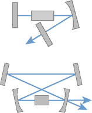
alignment sensitivity of optical resonators
axial mode spacing → free spectral range
cavities
cavity design → resonator design
crystalline mirrors
distributed feedback lasers
doubly resonant cavities → resonant frequency doubling
dynamically unstable resonators → unstable resonators
enhancement cavities
etalons
Fabry–Perot interferometers
finesse
free-space modes → modes
free spectral range
Fresnel number
Gires–Tournois interferometers
green problem → intracavity frequency doubling
guided modes → modes
Hermite–Gaussian modes
high-Q resonators → Q factor
higher-order modes
intracavity frequency doubling
laser cavities → laser resonators
laser resonator design → resonator design
laser resonators
lateral modes → higher-order modes
left-handed metamaterials → photonic metamaterials
metamaterials → photonic metamaterials
microcavities → cavities
misalignment → alignment sensitivity of optical resonators
mode cleaner cavities
mode competition
mode hopping
mode matching
modes
monocrystalline mirrors → crystalline mirrors
negative-index materials → photonic metamaterials
nonplanar ring oscillators
optical cavities → cavities
optical frequency
photonic metamaterials
Q factor
quality factor → Q factor
reference cavities
resonant frequency doubling
resonant second-harmonic generation → resonant frequency doubling
resonator design
resonator mode spacing → free spectral range
ring lasers
ring resonators
semiconductor mirrors → crystalline mirrors
sensitivity to alignment → alignment sensitivity of optical resonators
singly resonant cavities → resonant frequency doubling
stability zones of optical resonators
transverse modes → higher-order modes
unidirectional ring lasers → ring lasers
unstable resonators
waveguide modes → modes
Nonlinear optics
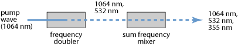
acceptance angle in nonlinear optics → critical phase matching
angle phase matching → critical phase matching
artificial saturable absorbers → saturable absorbers
attosecond pulses → high harmonic generation
B integral
birefringent phase matching
birefringent walk-off → spatial walk-off
Brillouin scattering
coherence length
critical phase matching
cross-phase modulation
crystal ovens
difference frequency generation → sum and difference frequency generation
domain engineering → periodic poling
domain inversion → periodic poling
domain-patterned semiconductors → orientation-patterned semiconductors
doubly resonant cavities → resonant frequency doubling
doubly resonant oscillators → optical parametric oscillators
effective mode area
effective nonlinear coefficient
electric-field poling → periodic poling
electro-optic effect
electro-optic modulators
fast absorbers → saturable absorbers
ferroelectric domain engineering → periodic poling
fiber-feedback parametric oscillators → optical parametric oscillators
fiber loop mirrors
fiber-optic parametric amplifiers → optical parametric amplifiers
four-wave mixing
fourth-harmonic generation → frequency quadrupling
frequency conversion → nonlinear frequency conversion
frequency doubling
frequency quadrupling
frequency tripling
green problem → intracavity frequency doubling
group velocity mismatch
high harmonic generation
hyper Raman scattering
idler wave → parametric amplification
intracavity frequency doubling
Kerr constant → Kerr effect
Kerr effect
Kerr lens
Kerr nonlinearity → Kerr effect
lithium niobate and tantalate → nonlinear crystal materials
mid-infrared laser sources
mode area → effective mode area
noncritical phase matching
nonlinear absorption
nonlinear amplification → parametric amplification
nonlinear coefficient → effective nonlinear coefficient
nonlinear crystal materials
nonlinear fiber loop mirrors → fiber loop mirrors
nonlinear frequency conversion
nonlinear index
nonlinear optics
nonlinear polarization
nonlinear polarization rotation
nonlinear pulse distortion
nonlinear refractive index → nonlinear index
nonlinear self-focusing → self-focusing
nonlinearities
OP-GaAs → orientation-patterned semiconductors
optical parametric amplifiers
optical parametric generators
optical parametric oscillators
optical rectification
orientation-patterned semiconductors
parabolic pulses
parametric amplification
parametric amplifiers → optical parametric amplifiers
parametric fluorescence
parametric generators → optical parametric generators
parametric oscillators → optical parametric oscillators
periodic poling
phase matching
phase-matching bandwidth
phase mismatch → phase matching
phase-sensitive amplification → parametric amplification
Poynting vector walk-off → spatial walk-off
pulse break-up → nonlinear pulse distortion
pump depletion
pump threshold → threshold pump power
quasi-phase matching
quasi-soliton pulses
Raman amplifiers
Raman effect → Raman scattering
Raman fiber lasers → Raman lasers
Raman gain
Raman lasers
Raman scattering
Raman self-frequency shift → solitons
red–green–blue sources → RGB sources
resonant frequency doubling
resonant second-harmonic generation → resonant frequency doubling
RGB sources
saturable absorbers
saturation parameter → saturable absorbers
second-harmonic generation → frequency doubling
self-focusing
self-phase modulation
self-similar pulse propagation → parabolic pulses
self-steepening → Kerr effect
similaritons → parabolic pulses
singly resonant cavities → resonant frequency doubling
singly resonant oscillators → optical parametric oscillators
slow absorbers → saturable absorbers
soliton fission → supercontinuum generation
soliton period
soliton self-frequency shift → solitons
solitons
spatial walk-off
spontaneous Raman scattering → Raman scattering
stimulated Brillouin scattering → Brillouin scattering
stimulated Raman scattering → Raman scattering
Stokes shift
sum and difference frequency generation
supercontinuum generation
sync-pumped parametric oscillators → optical parametric oscillators
t-waves → terahertz radiation
tandem OPOs → optical parametric oscillators
temperature phase matching → noncritical phase matching
temperature-stabilized ovens → crystal ovens
temporal walk-off
terahertz radiation
third-harmonic generation → frequency tripling
threshold pump power
type I or type II phase matching → phase matching
visible lasers
walk-off angle → spatial walk-off
walk-off compensation → spatial walk-off
wave breaking → nonlinear pulse distortion
z-scan measurements
Photonic devices
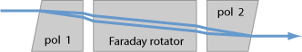
achromatic lenses → lenses
acousto-optic deflectors
acousto-optic frequency shifters
acousto-optic modulators
acousto-optic Q switches
acousto-optic tunable filters
aluminum mirrors → metal-coated mirrors
anti-reflection coatings
aperiodic fiber gratings → fiber Bragg gratings
arrayed waveguide gratings
artificial saturable absorbers → saturable absorbers
attenuators → optical attenuators
autocorrelators
avalanche photodiodes
Babinet–Soleil compensators
balanced photodetection
bat ear controllers → fiber polarization controllers
beam blocks → beam dumps
beam diagnostics → beam profilers
beam dumps
beam profilers
beam shapers
beam shutters
beam traps → beam dumps
beam viewing cards → laser viewing cards
Berek compensators
Berek tunable waveplates → Babinet–Soleil compensators
birefringent filters → birefringent tuners
birefringent tuners
Bragg grating sensors → fiber-optic sensors
Bragg mirrors
Brewster plates
brightness converters
broadband light sources → superluminescent sources
bulk Bragg gratings → volume Bragg gratings
calorimeters → optical energy meters
camera sensors → image sensors
cameras
cavity dumpers → pulse pickers
CCD sensors → image sensors
charge injection devices → image sensors
chirped mirrors
choppers → optical choppers
circular multipass cells → multipass gas cells
cleaner cavities → mode cleaners
CMOS sensors → image sensors
coatings → dielectric coatings
cold mirrors
color filters → optical filters
common-path interferometers
crystalline mirrors
delay lines → optical delay lines
detector cards → laser viewing cards
dichroic mirrors
dielectric coatings
dielectric mirrors
differential photodetection → balanced photodetection
diode drivers → laser diode drivers
diode modules → laser diode modules
dispersion-compensation modules
dispersive delay lines → optical delay lines
dispersive mirrors
distributed mirrors → Bragg mirrors
distributed sensors → fiber-optic sensors
doped fiber amplifiers → fiber amplifiers
double-chirped mirrors → chirped mirrors
doubly resonant oscillators → optical parametric oscillators
dual-segment photodiodes → position-sensitive detectors
electro-optic modulators
electroabsorption modulators
electron beam evaporation → dielectric mirrors
energy meters → optical energy meters
enhancement cavities
erbium-doped fiber amplifiers
etalons
Faraday isolators
Faraday rotators
fast absorbers → saturable absorbers
fiber amplifiers
fiber Bragg gratings
fiber couplers
fiber-feedback parametric oscillators → optical parametric oscillators
fiber loop mirrors
fiber-optic parametric amplifiers → optical parametric amplifiers
fiber-optic sensors
fiber polarization controllers
fiber sensors → fiber-optic sensors
filters → optical filters
Fizeau interferometers
Franz–Keldysh effect → electroabsorption modulators
gas absorption cells → multipass gas cells
Geiger mode photodiodes → avalanche photodiodes
Gires–Tournois interferometers
gold mirrors → metal-coated mirrors
gradient-index filters → rugate filters
half-wave plates → waveplates
half-wave voltage → Pockels cells
harmonic separators → dichroic mirrors
heat control filters → cold mirrors
Herriott multipass cells → multipass gas cells
holographic bulk gratings → volume Bragg gratings
hot mirrors
image converters → image intensifiers and image converters
image intensifiers and image converters
image sensors
infrared cameras
infrared detector cards → laser viewing cards
infrared detectors
infrared emitters
infrared sensor cards → laser viewing cards
infrared viewers
integrated optics
integrated optoelectronic devices → photonic integrated circuits
integrating spheres
intensity modulators
intensity profile measurement → beam profilers
interference coatings → dielectric coatings
interferometers
ion beam sputtering → dielectric mirrors
joule meters → optical energy meters
knife edge beam profilers → beam profilers
laser beam shapers → beam shapers
laser beam shutters → beam shutters
laser diode drivers
laser diode modules
laser energy meters → optical energy meters
laser line mirrors → laser mirrors
laser mirrors
laser power meters → optical power meters
laser pump chambers → pump chambers
laser scanners
laser viewing cards
lateral effect photodiodes → position-sensitive detectors
LEDs → light-emitting diodes
lenses
light choppers → optical choppers
light-emitting diodes
liquid crystal displays
liquid crystal modulators
long-pass gas cells → multipass gas cells
long-period fiber Bragg gratings → fiber Bragg gratings
long-wave infrared detectors → infrared detectors
luxmeters → photometers
Lyot filters
Mach–Zehnder interferometers → interferometers
matrix method for multilayer structures → dielectric mirrors
metal–semiconductor–metal photodetectors
metal-coated mirrors
Michelson interferometers
microchannel plate detectors → photomultipliers
mid-infrared laser sources
mode cleaner cavities
mode cleaners
mode field converters
modulators → optical modulators
monocrystalline mirrors → crystalline mirrors
multilayer coatings → dielectric coatings
multilayer mirrors → dielectric mirrors
multipass gas cells
neutral density filters
noise eaters
nonlinear fiber loop mirrors → fiber loop mirrors
objectives for photography → photographic objectives
optical attenuators
optical choppers
optical clocks
optical clockworks
optical coatings → dielectric coatings
optical delay lines
optical energy meters
optical fiber sensors → fiber-optic sensors
optical filters
optical frequency domain reflectometry → fiber-optic sensors
optical interference coatings → dielectric coatings
optical isolators → Faraday isolators
optical modulators
optical parametric amplifiers
optical parametric generators
optical parametric oscillators
optical power meters
optical power monitors
optical sensors
optical strain sensors
optical temperature sensors
opto-isolators
optocouplers → opto-isolators
optoelectronics
optronics → optoelectronics
output couplers
p–i–n photodiodes
parametric amplifiers → optical parametric amplifiers
parametric generators → optical parametric generators
parametric oscillators → optical parametric oscillators
Pfund cells → multipass gas cells
phase modulators
photo cameras
photocathodes
photoconductive switches
photocouplers → opto-isolators
photodetector arrays → photodiode arrays
photodetectors
photodiode arrays
photodiodes
photoelectric detectors → photoemissive detectors
photoemissive detectors
photographic objectives
photometers
photomultipliers
photon counting
photon science → photonics
photonic integrated circuits
photonics
photoreceivers → photodetectors
photosensitivity → fiber Bragg gratings
phototransistors
phototubes
planar lightwave circuits → photonic integrated circuits
planar waveguides
Pockels cell drivers
Pockels cells
polarimeters
polarimetry → polarimeters
polarization controllers → fiber polarization controllers
polarization rotators → Faraday rotators
position-sensitive detectors
power meters → optical power meters
power monitors → optical power monitors
pulse pickers
pulse shapers
pump chambers
pyroelectric detectors
Q switches
quadrant photodiodes → position-sensitive detectors
quantum dots
quantum photonics
quantum wells
quarter-wave mirrors
quarter-wave plates → waveplates
rotating disc choppers → optical choppers
rotating slit profilers → beam profilers
rugate filters
saturable absorber mirrors → semiconductor saturable absorber mirrors
saturable absorbers
saturable Bragg reflectors
saturation parameter → saturable absorbers
scanning beam profilers → beam profilers
scanning delay lines → optical delay lines
semiconductor mirrors → crystalline mirrors
semiconductor saturable absorber mirrors
sensor cards → laser viewing cards
sensors → fiber-optic sensors
Shack–Hartmann wavefront sensors
silicon photonics
silver mirrors → metal-coated mirrors
singly resonant oscillators → optical parametric oscillators
slow absorbers → saturable absorbers
spatial filters → mode cleaners
strain sensors → optical strain sensors
superluminescent diodes
superluminescent sources
supermirrors
surface-emitting LEDs → light-emitting diodes
sync-pumped parametric oscillators → optical parametric oscillators
tandem OPOs → optical parametric oscillators
tapered amplifiers
temperature sensors → optical temperature sensors
terahertz detectors
terahertz sources
thermal detectors
thermal power meters → optical power meters
thin-film coatings → dielectric coatings
thin-film mirrors → dielectric mirrors
traveling-wave photodetectors → velocity-matched photodetectors
tunable light sources → wavelength-tunable light sources
tunable optical filters
tunable retarders → Babinet–Soleil compensators
tuning fork choppers → optical choppers
two-mirror beam shapers → beam shapers
Twyman–Green interferometers
Ulbricht spheres → integrating spheres
ultrafast pulse shapers → pulse shapers
V coatings → anti-reflection coatings
vacuum tube photodetectors → phototubes
variable optical attenuators
variable waveplates → Babinet–Soleil compensators
velocity-matched photodetectors
volume Bragg gratings
wavelength meters → wavemeters
wavelength-tunable light sources
wavemeters
waveplates
White cells → multipass gas cells
white light interferometers
white light sources
Light detection and characterization

actinometry
autocorrelators
avalanche photodiodes
balanced photodetection
bandwidth
beam diagnostics → beam profilers
beam profilers
beam viewing cards → laser viewing cards
calorimeters → optical energy meters
cameras
candela → luminous intensity
CIE standard illuminants
coherent detection → optical heterodyne detection
color rendering index
colorimeters
colorimetry
delayed self-heterodyne interferometer → self-heterodyne linewidth measurement
detectivity
detector cards → laser viewing cards
differential photodetection → balanced photodetection
dispersive spectral analysis → spectrometers
dual-segment photodiodes → position-sensitive detectors
effective pulse duration → pulse duration
electric field reconstruction → pulse characterization
emission spectrum → optical spectrum
energy meters → optical energy meters
energy of laser pulses → pulse energy
exitance → radiant exitance
focal plane arrays
Fourier transform spectral phase interferometry → spectral phase interferometry
Fourier transform spectroscopy
frequency domain interferometry → spectral phase interferometry
frequency-resolved optical gating
Geiger mode photodiodes → avalanche photodiodes
heterodyne detection → optical heterodyne detection
homodyne detection → optical heterodyne detection
illuminance
image converters → image intensifiers and image converters
image intensifiers and image converters
infrared cameras
infrared detector cards → laser viewing cards
infrared detectors
infrared sensor cards → laser viewing cards
infrared spectroscopy → spectroscopy
infrared thermography → thermal imaging
infrared viewers
intensity → optical intensity
intensity profile measurement → beam profilers
irradiance
joule meters → optical energy meters
knife edge beam profilers → beam profilers
laser energy meters → optical energy meters
laser power meters → optical power meters
laser viewing cards
lateral effect photodiodes → position-sensitive detectors
light intensity → optical intensity
long-wave infrared detectors → infrared detectors
lumen → luminous flux
luminance
luminosity
luminous efficacy and efficiency
luminous flux
luminous intensity
lux → illuminance
luxmeters → photometers
microchannel plate detectors → photomultipliers
microchannel plates
monochromators
monochromators → spectrometers
night vision devices
noise-equivalent power
optical bandwidth → bandwidth
optical energy meters
optical heterodyne detection
optical intensity
optical power
optical power meters
optical power monitors
optical spectrum
optical spectrum analyzers
optical wavelength → wavelength
photo cameras
photoacoustic spectroscopy → spectroscopy
photocathodes
photoconductive detectors
photodetector arrays → photodiode arrays
photodetectors
photodiode arrays
photodiodes
photoelectric detectors → photoemissive detectors
photoelectric effect
photoemission → photoelectric effect
photoemissive detectors
photometers
photometry
photomultipliers
photon counting
photoreceivers → photodetectors
photoresistors → photoconductive detectors
phototransistors
phototubes
position-sensitive detectors
power meters → optical power meters
power monitors → optical power monitors
pulse characterization
pulse duration
pulse energy
pulse length → pulse duration
pulse width → pulse duration
pyroelectric detectors
quadrant photodiodes → position-sensitive detectors
quantum efficiency
quantum yield → quantum efficiency
radiance
radiant energy
radiant exitance
radiant flux
radiant intensity
radiant power → radiant flux
radiant sensitivity → responsivity
radiometers → radiometry
radiometry
responsivity
rotating slit profilers → beam profilers
scanning beam profilers → beam profilers
scanning spectrometers → spectrometers
self-heterodyne linewidth measurement
sensitivity
sensor cards → laser viewing cards
Shack–Hartmann wavefront sensors
solar-blind photodetectors
specific detectivity → detectivity
spectral brightness
spectral exitance → radiant exitance
spectral flux → radiant flux
spectral intensity → radiant intensity
spectral phase
spectral phase interferometry
spectral quantities
spectral radiance → radiance
spectral response of a photodetector
spectral width → bandwidth
spectrographs
spectrometers
spectrometry → spectroscopy
spectroradiometers → spectrometers
spectroscopy
spectrum → optical spectrum
standard illuminants → CIE standard illuminants
terahertz detectors
thermal detectors
thermal imaging
thermal power meters → optical power meters
time domain spectroscopy → Fourier transform spectroscopy
vacuum tube photodetectors → phototubes
vacuum wavelength → wavelength
visible-blind detectors → solar-blind photodetectors
wavelength
wavelength meters → wavemeters
wavemeters
wavenumber
white light
Optoelectronics
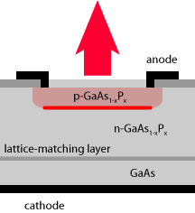
avalanche photodiodes
broad area laser diodes
camera sensors → image sensors
CCD sensors → image sensors
charge injection devices → image sensors
CMOS sensors → image sensors
diode arrays → diode bars
diode bars
diode lasers
diode stacks
distributed Bragg reflector lasers
distributed feedback lasers
dual-segment photodiodes → position-sensitive detectors
electro-optics
electroabsorption modulators
external-cavity diode lasers
fast axis → diode bars
Franz–Keldysh effect → electroabsorption modulators
Geiger mode photodiodes → avalanche photodiodes
image converters → image intensifiers and image converters
image intensifiers and image converters
image sensors
integrated optoelectronic devices → photonic integrated circuits
intersubband transitions → quantum cascade lasers
laser diode bars → diode bars
laser diode stacks → diode stacks
laser diodes
lateral effect photodiodes → position-sensitive detectors
LEDs → light-emitting diodes
light-emitting diodes
microchannel plate detectors → photomultipliers
microchannel plates
optoelectronics
optronics → optoelectronics
photocathodes
photoconductive detectors
photoconductive sampling
photoconductive switches
photodetector arrays → photodiode arrays
photodetectors
photodiode arrays
photodiodes
photomultipliers
photon counting
photonic integrated circuits
photoreceivers → photodetectors
photoresistors → photoconductive detectors
phototransistors
phototubes
planar lightwave circuits → photonic integrated circuits
position-sensitive detectors
quadrant photodiodes → position-sensitive detectors
quantum cascade lasers
sampled grating lasers → distributed Bragg reflector lasers
semiconductor diode lasers → diode lasers
semiconductor lasers
silicon photonics
single-emitter laser diodes → broad area laser diodes
slow axis → diode bars
stack lasers → diode stacks
superluminescent diodes
surface-emitting LEDs → light-emitting diodes
surface-emitting semiconductor lasers
vacuum tube photodetectors → phototubes
Lasers
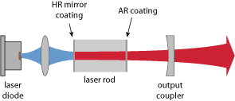
absorption cross sections → transition cross sections
absorption efficiency → pump absorption
absorption saturation → pump absorption
active fibers
active laser media → gain media
active mirror → thin-disk lasers
active mode locking
active stabilization of lasers → stabilization of lasers
alexandrite lasers
alignment lasers
alignment sensitivity of optical resonators
alkali vapor lasers → gas lasers
all-solid-state lasers
allowed transitions → forbidden transitions
alpha factor → linewidth enhancement factor
amplification bandwidth → gain bandwidth
amplified spontaneous emission
amplifier transitions → laser transitions
amplitude noise → intensity noise
applications of lasers → laser applications
arc lamp pumping → lamp-pumped lasers
argon fluoride lasers → excimer lasers
argon ion lasers
athermal lasers → radiation-balanced lasers
beam collimators
beam combining
beam pointing fluctuations
beam pointing stability → beam pointing fluctuations
blue lasers
brightness converters
broad-area laser diodes
bulk lasers
bulk lasers versus fiber lasers → fiber lasers versus bulk lasers
carbon dioxide lasers → CO2 lasers
cascade lasing → cooperative lasing
cavity dumping
ceramic gain media
characterization of laser beams → laser beam characterization
chemical lasers → gas lasers
chillers → laser cooling units
chillers for lasers → laser cooling units
chromium-doped gain media
class-A and class-B regime of a laser → relaxation oscillations
CO2 lasers
coherent beam combining
composite laser crystals
concentration of dopant → doping concentration
continuous-wave operation
cooling units for lasers → laser cooling units
cooperative lasing
copper vapor lasers → gas lasers
core-less end caps
cross lasers → alignment lasers
cross sections → transition cross sections
cryogenic lasers
damage threshold → laser-induced damage
depolarization loss
diffusion bonding → composite laser crystals
diode arrays → diode bars
diode bars
diode drivers → laser diode drivers
diode lasers
diode modules → laser diode modules
diode-pumped lasers
diode stacks
direct diode lasers
disk lasers → thin-disk lasers
dispersion management
distributed Bragg reflector lasers
distributed feedback lasers
doped insulator lasers
doping concentration
duty cycle → quasi-continuous-wave operation
dye lasers
edge-emitting semiconductor lasers
effective cross sections → effective transition cross sections
effective transition cross sections
efficiency of a laser → wall-plug efficiency
electrical-to-optical efficiency → wall-plug efficiency
emission cross sections → transition cross sections
emission linewidth → linewidth
end pumping
entropy balance of lasers → radiation-balanced lasers
erbium-doped gain media
excimer lasers
excited-state absorption
external-cavity diode lasers
extinction ratio → polarization of light
eye-safe lasers
fast axis → diode bars
femtosecond fiber lasers → mode-locked fiber lasers
femtosecond lasers
fiber-coupled diode lasers
fiber end caps → core-less end caps
fiber lasers
fiber lasers versus bulk lasers
figure-of-eight laser → mode-locked fiber lasers
flash lamp pumping → lamp-pumped lasers
fluorine lasers → excimer lasers
FM mode locking → mode locking
forbidden transitions
forsterite crystals → chromium-doped gain media
four-level and three-level gain media
Frantz–Nodvick equation → gain saturation
free electron lasers
gain
gain bandwidth
gain clamping
gain compression → gain saturation
gain efficiency
gain media
gain modules → laser heads
gain narrowing
gain saturation
gain switching
gas lasers
green lasers
green problem → intracavity frequency doubling
ground state laser transitions → four-level and three-level gain media
heat capacity lasers → quasi-continuous-wave operation
helium–cadmium lasers → gas lasers
helium–neon lasers
Henry factor → linewidth enhancement factor
high brightness laser diodes
high-power fiber lasers and amplifiers
high-power lasers
hybrid laser crystals → composite laser crystals
hybrid mode locking → mode locking
in-band pumping → optical pumping
in-plane lasers → edge-emitting semiconductor lasers
induced focusing → thermal lensing
industrial lasers
injection locking
injection seeding
intensity noise
intensity-to-phase coupling → linewidth enhancement factor
interlocks
intersubband transitions → quantum cascade lasers
intracavity frequency doubling
intracavity laser absorption spectroscopy
ion lasers → argon ion lasers
krypton fluoride lasers → excimer lasers
krypton ion lasers → argon ion lasers
lamp-pumped lasers
laser applications
laser beam characterization
laser beam combining → beam combining
laser beams
laser cavities → laser resonators
laser cooling units
laser cross sections → transition cross sections
laser crystals
laser crystals versus glasses
laser design
laser development
laser diode bars → diode bars
laser diode collimators
laser diode drivers
laser diode modules
laser diode stacks → diode stacks
laser diodes
laser disks → thin-disk lasers
laser dyes → dye lasers
laser dynamics
laser gain → gain
laser gain media → gain media
laser glasses → laser crystals versus glasses
laser hazards → laser safety
laser heads
laser-induced damage
laser light
laser line mirrors → laser mirrors
laser lines
laser linewidth → linewidth
laser media → gain media
laser mirrors
laser modeling
laser modules → laser heads
laser noise
laser optics
laser oscillators → lasers
laser physics
laser pointers
laser pump chambers → pump chambers
laser radiation → laser light
laser resonators
laser rods → rod lasers
laser safety
laser specifications
laser threshold
laser transitions
lasers
lasing without inversion
lifetime broadening → gain bandwidth
line lasers → alignment lasers
linear polarization → polarization of light
linewidth
linewidth enhancement factor
longitudinal pumping → end pumping
lower-state lifetime
master laser
master oscillator fiber amplifier
master oscillator power amplifier
medical lasers
microchip lasers
mid-infrared laser sources
misalignment → alignment sensitivity of optical resonators
mode competition
mode hopping
mode-locked diode lasers
mode-locked fiber lasers
mode-locked lasers
mode lockers → mode locking devices
mode locking
mode locking devices
modeling → laser modeling
modes of laser operation
molecular lasers
monochromaticity → linewidth
monofrequency lasers → single-frequency lasers
monolithic solid state lasers
nanosecond lasers
narrow-linewidth lasers
Nd:YAG → YAG lasers
Nd:YLF → YLF lasers
Nd:YVO4 → vanadate lasers
neodymium-doped gain media
nitrogen lasers → gas lasers
noise → laser noise
noise reduction → stabilization of lasers
nonlinear mirror mode locking → mode locking
nonplanar ring oscillators
number density of dopant → doping concentration
OEM laser modules
one-atom lasers → single-atom lasers
operation modes of lasers → modes of laser operation
optical damage → laser-induced damage
optical damage threshold → laser-induced damage
optical gain → gain
optical pumping
optically pumped semiconductor lasers → vertical external-cavity surface-emitting lasers
optics for lasers → laser optics
orange lasers → yellow and orange lasers
oscillators
output couplers
output coupling efficiency
parasitic lasing
passive mode locking
percentage of doping → doping concentration
phase synchronization of lasers → synchronization of lasers
phonon-terminated lasers → vibronic lasers
picosecond lasers
pigtailed diode lasers → fiber-coupled diode lasers
pointing stability → beam pointing fluctuations
polarization extinction ratio → polarization of light
polarization of light
power amplifiers → master oscillator power amplifier
power efficiency → wall-plug efficiency
power scaling of lasers
pump absorption
pump chambers
pump depletion
pump parameter
pump threshold → threshold pump power
Q-switched lasers
quantum cascade lasers
quasi-continuous-wave operation
quasi-three-level lasers → four-level and three-level gain media
radiance scaling of lasers → power scaling of lasers
radiation-balanced lasers
Raman fiber lasers → Raman lasers
Raman lasers
rational harmonic mode locking → active mode locking
reabsorption in gain media → four-level and three-level gain media
red–green–blue sources → RGB sources
red lasers
regenerative mode locking → active mode locking
relative intensity noise
relaxation oscillations
RGB sources
ring lasers
rod lasers
ruby lasers
safety → laser safety
sampled grating lasers → distributed Bragg reflector lasers
saturation of absorption → pump absorption
saturation of gain → gain saturation
scalability → power scaling of lasers
scaling procedures → power scaling of lasers
Schawlow–Townes linewidth
scientific lasers
seed lasers
self-injection locking → injection locking
self-starting mode locking
self-terminating laser transitions
semiconductor diode lasers → diode lasers
semiconductor disk lasers → vertical external-cavity surface-emitting lasers
semiconductor fiber lasers → fiber lasers
semiconductor lasers
sensitivity to alignment → alignment sensitivity of optical resonators
SESAM mode-locked lasers → mode-locked lasers
side pumping
single-atom lasers
single-emitter laser diodes → broad area laser diodes
single-frequency lasers
single-frequency operation
single-mode operation
single transverse mode operation → single-mode operation
single-wavelength lasers → single-frequency lasers
slab lasers
slave laser
slope efficiency
slow axis → diode bars
solid state lasers
soliton mode locking
spatial hole burning
specifications for lasers → laser specifications
spectral beam combining
spectral linewidth → linewidth
spiking
spontaneous emission factor → Schawlow–Townes linewidth
spot lasers → alignment lasers
stabilization of lasers
stack lasers → diode stacks
stimulated emission
stimulated emission cross sections → transition cross sections
stretched-pulse fiber lasers → mode-locked fiber lasers
surface-emitting semiconductor lasers
surgical lasers → medical lasers
synchronization of lasers
tapered laser diodes
thermal depolarization → depolarization loss
thermal lensing
thin-disk lasers
three-level gain media → four-level and three-level gain media
threshold pump power
thresholdless lasers
timing synchronization → synchronization of lasers
titanium–sapphire lasers
transition cross sections
transition-metal-doped gain media
transitions → laser transitions
transparency intensity → four-level and three-level gain media
tunable lasers
tungstate lasers
twisted-mode technique
ultrafast diode lasers → mode-locked diode lasers
ultrafast fiber lasers → mode-locked fiber lasers
ultrafast laser physics
ultrafast lasers
ultrashort pulse generation → ultrafast lasers
ultraviolet lasers
unidirectional ring lasers → ring lasers
upconversion lasers
uses of lasers → laser applications
vanadate lasers
VCSEL arrays
vertical cavity surface-emitting lasers
vertical external-cavity surface-emitting lasers
vibronic lasers
violet lasers → blue lasers
visible lasers
wall-plug efficiency
waveguide lasers
wavelength beam combining → spectral beam combining
wavelength-swept lasers
wavelength-tunable lasers → tunable lasers
wavelength tuning
weakly allowed transitions → forbidden transitions
X-ray lasers
xenon bromide lasers → excimer lasers
YAG lasers
Yb:YAG, Yb:KGW, Yb:KYW, Yb:glass, … → ytterbium-doped gain media
yellow and orange lasers
YLF lasers
ytterbium-doped gain media
Optical amplifiers
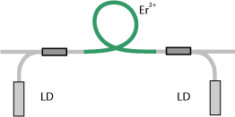
active laser media → gain media
amplification bandwidth → gain bandwidth
amplification factor
amplified spontaneous emission
amplifier chains
amplifier noise
amplifier stages → amplifier chains
amplifier transitions → laser transitions
amplifiers → optical amplifiers
dBm
doped fiber amplifiers → fiber amplifiers
dual-stage amplifiers → amplifier chains
erbium-doped fiber amplifiers
excess noise → amplifier noise
femtosecond pulse amplifiers → ultrafast amplifiers
fiber amplifiers
fiber simulation software
Frantz–Nodvick equation → gain saturation
gain
gain bandwidth
gain clamping
gain compression → gain saturation
gain efficiency
gain equalization
gain flattening → gain equalization
gain guiding
gain media
gain narrowing
gain saturation
Giles parameters
high-power fiber lasers and amplifiers
laser amplifiers → optical amplifiers
laser gain → gain
laser gain media → gain media
laser media → gain media
laser transitions
lifetime broadening → gain bandwidth
master oscillator fiber amplifier
master oscillator power amplifier
mode solvers → fiber simulation software
multi-stage amplifiers → amplifier chains
multipass amplifiers
noise figure
nonlinear pulse distortion
optical amplifiers
optical gain → gain
parasitic lasing
picosecond pulse amplifiers → ultrafast amplifiers
power amplification factor → amplification factor
power amplifiers → master oscillator power amplifier
pulse break-up → nonlinear pulse distortion
Raman amplifiers
rate equation modeling
regenerative amplifiers
saturation of gain → gain saturation
seed lasers
semiconductor optical amplifiers
slave laser
small-signal gain
stimulated emission
tapered amplifiers
transition-metal-doped gain media
transitions → laser transitions
ultrafast amplifiers
wave breaking → nonlinear pulse distortion
Non-laser light sources
arc lamps
broadband light sources → superluminescent sources
calibration lamps → spectral lamps
cold cathode fluorescent lamps → fluorescent lamps
compact fluorescent lamps → fluorescent lamps
doubly resonant oscillators → optical parametric oscillators
excimer lamps
fiber-feedback parametric oscillators → optical parametric oscillators
fiber-optic parametric amplifiers → optical parametric amplifiers
flash lamps
fluorescent lamps
gas discharge lamps
halogen lamps
high intensity discharge lamps
high pressure discharge lamps → gas discharge lamps
incandescent lamps
indicator lamps → signal lamps
krypton lamps → gas discharge lamps
Lambertian emitters and scatterers
lamp power supplies
LEDs → light-emitting diodes
light-emitting diodes
low pressure discharge lamps → gas discharge lamps
mercury vapor lamps
metal halide lamps
metal vapor lamps
neon lamps → gas discharge lamps
optical parametric amplifiers
optical parametric generators
optical parametric oscillators
parametric amplifiers → optical parametric amplifiers
parametric generators → optical parametric generators
parametric oscillators → optical parametric oscillators
perfect diffusion → Lambertian emitters and scatterers
signal lamps
singly resonant oscillators → optical parametric oscillators
sodium vapor lamps
spectral lamps
superluminescent diodes
superluminescent sources
surface-emitting LEDs → light-emitting diodes
sync-pumped parametric oscillators → optical parametric oscillators
tandem OPOs → optical parametric oscillators
wavelength calibration lamps → spectral lamps
white light sources
xenon lamps
Vision, displays and imaging
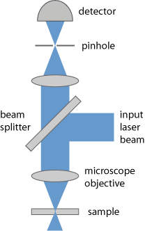
aberrations → optical aberrations
afocal optical systems
aperture stops
astigmatism
beam diagnostics → beam profilers
beam profilers
beam viewing cards → laser viewing cards
binoculars → telescopes
camera sensors → image sensors
cameras
CCD sensors → image sensors
charge injection devices → image sensors
chromaticity
CIE standard illuminants
circle of confusion → imaging with a lens
CMOS sensors → image sensors
color spaces
color temperature
color vision
coma → optical aberrations
condensers
confocal microscopy → confocal scanning microscopes
confocal scanning microscopes
conjugate planes
deformable mirrors
demagnification → magnification
depth of field
depth of focus
detector cards → laser viewing cards
diaphragms
dual-segment photodiodes → position-sensitive detectors
entrance and exit pupil
exit pupil → entrance and exit pupil
eyepieces → ocular lenses
f-number
f-stop number → f-number
field curvature → optical aberrations
field lenses
field of view
field stops
fluorescence microscopy
hand lenses → magnifying glasses
holography
hyperfocal distance
hyperspectral imaging
image converters → image intensifiers and image converters
image distortion → optical aberrations
image intensifiers and image converters
image planes
image sensors
image space → object and image space
imaging
imaging with a lens
infrared cameras
infrared detector cards → laser viewing cards
infrared sensor cards → laser viewing cards
infrared thermography → thermal imaging
infrared viewers
intensity profile measurement → beam profilers
intermediate image planes → image planes
irradiance
knife edge beam profilers → beam profilers
laser microscopy
laser radar → LIDAR
laser scanners
laser viewing cards
lateral effect photodiodes → position-sensitive detectors
lens speed → f-number
LIDAR
light detection and ranging → LIDAR
liquid crystal displays
loupes
luminosity
luminosity functions
magnification
magnifying glasses
microscope objectives
microscopes
multiphoton microscopy → fluorescence microscopy
multispectral imaging
nanoscopy → laser microscopy
object and image space
objective lenses → objectives
objectives
objectives for photography → photographic objectives
ocular lenses
optical aberrations
optical coherence tomography
optical images → imaging
optical imaging → imaging
optical profilometers
optical spaces → object and image space
optical surface profilers → optical profilometers
phosphors
photo cameras
photographic objectives
photopic vision → scotopic and photopic vision
position-sensitive detectors
primary colors → color spaces
principal points and principal planes
profilometers → optical profilometers
pupils → entrance and exit pupil
quadrant photodiodes → position-sensitive detectors
red–green–blue sources → RGB sources
RGB sources
rotating slit profilers → beam profilers
scanning beam profilers → beam profilers
scotopic and photopic vision
sensitivity of the eye → scotopic and photopic vision
sensor cards → laser viewing cards
spectral imaging
spectral sensitivity of the eye → scotopic and photopic vision
spherical aberrations
standard illuminants → CIE standard illuminants
stimulated emission depletion microscopy → fluorescence microscopy
surface profilers → optical profilometers
telecentric lenses
telescopes
thermal imaging
two-photon microscopy → fluorescence microscopy
vignetting
white light
Lightwave communications
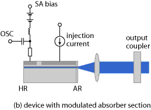
active optical cables → fiber-optic links
add–drop multiplexers → wavelength division multiplexing
amplifier noise
bandwidth–distance product
bit error rate
C band → optical fiber communications
data transmission → optical data transmission
dBm
differential mode delay
dispersion compensation
dispersion compensation modules
dispersion-flattened fibers → dispersion-shifted fibers
dispersion management
dispersion-shifted fibers
distributed amplifiers
doped fiber amplifiers → fiber amplifiers
effective modal bandwidth → modal bandwidth
electronic dispersion compensation
erbium-doped fiber amplifiers
excess noise → amplifier noise
few-mode fibers
fiber amplifiers
fiber-optic communications → optical fiber communications
fiber-optic links
fiber-optic networks
fiber to the home
free-space communications → free-space optical communications
free-space optical communications
graded-index fibers
GRISMs → dispersion compensation
integrated optoelectronic devices → photonic integrated circuits
inter-satellite communications → free space optical communications
L band → optical fiber communications
laser communications → free-space optical communications
laser links → free space optical communications
laser transmitters → free space optical communications
lightwave communications → optical data transmission
microwave over fiber → radio and microwave over fiber
modal bandwidth
mode division multiplexing
mode-locked diode lasers
modulators → optical modulators
multi-core fibers
optical communications → optical data transmission
optical data transmission
optical fiber communications
optical modulators
optical networks → fiber-optic networks
optical telegraph → free space optical communications
optical time-domain reflectometers
parabolic index fibers → graded-index fibers
photonic integrated circuits
planar lightwave circuits → photonic integrated circuits
polarization mode dispersion
radio and microwave over fiber
Raman amplifiers
S band → optical fiber communications
satellite communications → free space optical communications
SDM fibers → space division multiplexing
semiconductor optical amplifiers
space communications → free space optical communications
space division multiplexing
telecom fibers
telecom windows → optical fiber communications
telecommunications → optical data transmission
time division multiplexing
transversal filters → electronic dispersion compensation
ultrafast diode lasers → mode-locked diode lasers
wavelength division multiplexing
Quantum optics
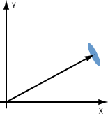
amplified spontaneous emission
amplitude-squeezed light
anti-Stokes fluorescence cooling → optical refrigeration
antibunching → nonclassical light
blackbody radiation → thermal radiation
coherent detection → optical heterodyne detection
coherent states
Doppler cooling
Doppler limit
dressed states → Sisyphus cooling
entangled states → photons
fluorescent cooling → optical refrigeration
Fock states → nonclassical light
Glauber states → coherent states
heterodyne detection → optical heterodyne detection
homodyne detection → optical heterodyne detection
in-band pumping → optical pumping
incandescence → thermal radiation
key distribution → quantum cryptography
laser cooling
laser refrigeration → optical refrigeration
lasing without inversion
light forces
no-cloning theorem → quantum cryptography
nonclassical light
one-atom lasers → single-atom lasers
optical bomb → superradiance
optical heterodyne detection
optical molasses
optical pumping
optical refrigeration
optical traps → light forces
parametric fluorescence
phase-squeezed light → squeezed states of light
photon counting
photon number states → nonclassical light
photon statistics → nonclassical light
photons
Planck law → thermal radiation
polarization gradient cooling → Sisyphus cooling
quadrature squeezing → squeezed states of light
quantum cryptography
quantum dots
quantum key distribution
quantum noise
quantum optics
quantum photonics
quantum wells
Rabi frequency → Rabi oscillations
Rabi oscillations
radiation pressure
recoil limit
Schawlow–Townes linewidth
shot noise
single-atom lasers
Sisyphus cooling
spontaneous emission
spontaneous emission factor → Schawlow–Townes linewidth
squeezed states of light
standard quantum limit
superfluorescence
superradiance
thermal radiation
thresholdless lasers
vacuum noise
Zeeman slowing → Doppler cooling
Fluctuations and noise
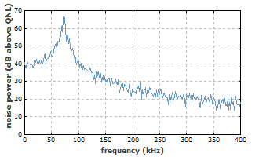
active stabilization of lasers → stabilization of lasers
amplified spontaneous emission
amplitude noise → intensity noise
antibunching → nonclassical light
balanced photodetection
coherent detection → optical heterodyne detection
coherent states
cycle jitter → timing jitter
delayed self-heterodyne interferometer → self-heterodyne linewidth measurement
detectivity
differential photodetection → balanced photodetection
emission linewidth → linewidth
Fock states → nonclassical light
frequency noise
Glauber states → coherent states
Gordon–Haus jitter
heterodyne detection → optical heterodyne detection
homodyne detection → optical heterodyne detection
injection locking
injection seeding
intensity noise
jitter → timing jitter
laser linewidth → linewidth
laser noise
linewidth
monochromaticity → linewidth
narrow-linewidth lasers
noise → laser noise
noise eaters
noise-equivalent power
noise figure
noise reduction → stabilization of lasers
noise specifications
nonclassical light
optical heterodyne detection
phase noise
phase-squeezed light → squeezed states of light
phase synchronization of lasers → synchronization of lasers
photon number states → nonclassical light
photon statistics → nonclassical light
power spectral density
pulse-to-pulse jitter → timing jitter
Q-switching instabilities
quadrature squeezing → squeezed states of light
quantum noise
r.m.s. values → power spectral density
recirculating fiber loops
relative intensity noise
residual jitter → timing jitter
Schawlow–Townes linewidth
self-heterodyne linewidth measurement
self-injection locking → injection locking
sensitivity
shot noise
signal-to-noise ratio
specific detectivity → detectivity
specifications of noise and fluctuations → noise specifications
spectral linewidth → linewidth
spectral power density → power spectral density
spontaneous emission
spontaneous emission factor → Schawlow–Townes linewidth
squeezed states of light
stabilization of lasers
standard quantum limit
synchronization of lasers
timing jitter
timing noise → timing jitter
timing phase
timing synchronization → synchronization of lasers
vacuum noise
Wiener–Khinchin theorem → power spectral density
Optical metrology
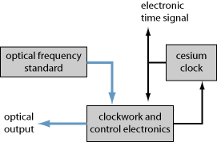
absolute phase → carrier–envelope offset
absorption spectroscopy → laser absorption spectroscopy
attosecond pulse spectroscopy → time-resolved spectroscopy
autocollimators
autocorrelators
avalanche photodiodes
beam diagnostics → beam profilers
beam profilers
beam propagation factor → M2 factor
beam quality factor → M2 factor
beat note
carrier–envelope offset
characterization of laser beams → laser beam characterization
coherent detection → optical heterodyne detection
coherent time-resolved spectroscopy → time-resolved spectroscopy
confocal microscopy → confocal scanning microscopes
confocal scanning microscopes
cycle jitter → timing jitter
damage threshold → laser-induced damage
decibel
delayed self-heterodyne interferometer → self-heterodyne linewidth measurement
dispersive spectral analysis → spectrometers
distance measurements with lasers
dual-segment photodiodes → position-sensitive detectors
effective pulse duration → pulse duration
electric field reconstruction → pulse characterization
energy of laser pulses → pulse energy
Fizeau interferometers
fluorescence spectroscopy
fly-wheel oscillators → frequency metrology
Fourier transform spectral phase interferometry → spectral phase interferometry
Fourier transform spectroscopy
frequency chains → frequency metrology
frequency domain interferometry → spectral phase interferometry
frequency metrology
frequency-resolved optical gating
frequency standards → optical frequency standards
Geiger mode photodiodes → avalanche photodiodes
heterodyne detection → optical heterodyne detection
homodyne detection → optical heterodyne detection
illuminance
infrared spectroscopy → spectroscopy
infrared thermography → thermal imaging
integrating spheres
intensity profile measurement → beam profilers
interferometers
irradiance
jitter → timing jitter
knife edge beam profilers → beam profilers
laser absorption spectroscopy
laser beam characterization
laser distance meters → distance measurements with lasers
laser-induced damage
laser radar → LIDAR
laser rangefinders
laser spectroscopy
lateral effect photodiodes → position-sensitive detectors
LIDAR
light detection and ranging → LIDAR
lux → illuminance
luxmeters → photometers
M2 factor
Mach–Zehnder interferometers → interferometers
metrology → optical metrology
Michelson interferometers
microchannel plate detectors → photomultipliers
microscope objectives
microscopes
monochromators
monochromators → spectrometers
optical clocks
optical clockworks
optical coherence tomography
optical damage → laser-induced damage
optical damage threshold → laser-induced damage
optical flats
optical frequency
optical frequency metrology → frequency metrology
optical frequency standards
optical heterodyne detection
optical lattice clocks → optical frequency standards
optical metrology
optical power monitors
optical profilometers
optical spectrum analyzers
optical surface profilers → optical profilometers
optical time-domain reflectometers
phase shift method for distance measurements
photoacoustic spectroscopy → spectroscopy
photodetector arrays → photodiode arrays
photodiode arrays
photodiodes
photometers
photometry → optical metrology
photomultipliers
phototransistors
phototubes
polarimeters
polarimetry → polarimeters
position-sensitive detectors
power density
power monitors → optical power monitors
power spectral density
profilometers → optical profilometers
pulse characterization
pulse duration
pulse energy
pulse length → pulse duration
pulse repetition rate
pulse-to-pulse jitter → timing jitter
pulse width → pulse duration
pump–probe measurements
pump–probe spectroscopy → time-resolved spectroscopy
quadrant photodiodes → position-sensitive detectors
quantum beat spectroscopy → time-resolved spectroscopy
r.m.s. values → power spectral density
radiance
radiant energy
radiant flux
radiant intensity
radiant power → radiant flux
range finding → distance measurements with lasers
reference cavities
references surfaces → optical flats
remote ranging → distance measurements with lasers
repetition rate → pulse repetition rate
residual jitter → timing jitter
rotating slit profilers → beam profilers
scanning beam profilers → beam profilers
scanning spectrometers → spectrometers
self-heterodyne linewidth measurement
self-phase-stabilized pulses → carrier–envelope offset
signal-to-noise ratio
spectral brightness
spectral flux → radiant flux
spectral intensity → radiant intensity
spectral phase
spectral phase interferometry
spectral power density → power spectral density
spectral radiance → radiance
spectrographs
spectrometers
spectrometry → spectroscopy
spectrophotometers
spectroradiometers → spectrometers
spectroscopy
surface profilers → optical profilometers
thermal imaging
time domain spectroscopy → Fourier transform spectroscopy
time-of-flight measurements
time-resolved spectroscopy
timing jitter
timing noise → timing jitter
timing phase
transient absorption spectroscopy → time-resolved spectroscopy
triangulation
Twyman–Green interferometers
Ulbricht spheres → integrating spheres
ultrafast spectroscopy → time-resolved spectroscopy
vacuum tube photodetectors → phototubes
wavelength meters → wavemeters
wavemeters
white light interferometers
Wiener–Khinchin theorem → power spectral density
z-scan measurements
Light pulses
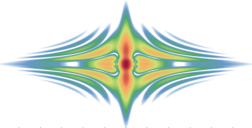
absolute phase → carrier–envelope offset
active mode locking
active Q switching → Q switching
additive-pulse mode locking
adiabatic soliton compression
artificial saturable absorbers → saturable absorbers
attosecond pulses → high harmonic generation
autocorrelators
bandwidth-limited pulses
carrier–envelope offset
cavity dumpers → pulse pickers
cavity dumping
chirp
chirped mirrors
chirped-pulse amplification
chirped pulses → chirp
chromatic dispersion
comb spectra → frequency combs
damage threshold → laser-induced damage
dechirping → pulse compression
differential mode delay
dispersion compensation
dispersion compensation modules
dispersion-decreasing fibers
dispersion-flattened fibers → dispersion-shifted fibers
dispersion management
dispersion-shifted fibers
dispersive pulse compression → pulse compression
dispersive pulse stretchers → pulse stretchers
dispersive wave
divided-pulse amplification
double-chirped mirrors → chirped mirrors
double pulses
duty cycle → quasi-continuous-wave operation
effective modal bandwidth → modal bandwidth
effective pulse duration → pulse duration
electric field reconstruction → pulse characterization
energy of laser pulses → pulse energy
f–2f interferometer → frequency combs
fast absorbers → saturable absorbers
femtosecond fiber lasers → mode-locked fiber lasers
femtosecond lasers
femtosecond pulse amplifiers → ultrafast amplifiers
few-cycle pulses → ultrashort pulses
figure-of-eight laser → mode-locked fiber lasers
FM mode locking → mode locking
Fourier limit → transform limit
Fourier transform spectral phase interferometry → spectral phase interferometry
frequency combs
frequency domain interferometry → spectral phase interferometry
frequency-resolved optical gating
frequency synthesizers → frequency combs
fundamental mode locking
gain switching
Gaussian pulses
giant pulses → Q switching
Gires–Tournois interferometers
Gordon–Haus jitter
grating compressors → pulse compression
GRISMs → dispersion compensation
group delay
group delay dispersion
group velocity
group velocity dispersion
group velocity mismatch
harmonic mode locking
Haus Master equation
heat capacity lasers → quasi-continuous-wave operation
high harmonic generation
higher-order solitons
hybrid mode locking → mode locking
injection locking
injection seeding
instantaneous frequency
Kelly sidebands
Kerr lens mode locking
Kuizenga–Siegman theory
laser-induced damage
laser pulses → pulses
light pulses → pulses
master equation → Haus master equation
modal bandwidth
mode-locked diode lasers
mode-locked fiber lasers
mode-locked lasers
mode lockers → mode locking devices
mode locking
mode locking devices
multiple pulses → double pulses
nanosecond lasers
nonlinear mirror mode locking → mode locking
nonlinear polarization rotation
nonlinear pulse compression → pulse compression
nonlinear pulse distortion
numerical modeling → pulse propagation modeling
optical damage → laser-induced damage
optical damage threshold → laser-induced damage
optical frequency synthesizers → frequency combs
optical parametric chirped-pulse amplification
optical pulse generation → pulse generation
optical pulses → pulses
optical rulers → frequency combs
parabolic pulses
passive mode locking
passive Q switching → Q switching
peak power
phase synchronization of lasers → synchronization of lasers
picosecond lasers
picosecond pulse amplifiers → ultrafast amplifiers
prism pairs
pulse break-up → nonlinear pulse distortion
pulse characterization
pulse compression
pulse duration
pulse energy
pulse front tilt
pulse generation
pulse length → pulse duration
pulse pickers
pulse propagation modeling
pulse repetition rate
pulse shape → Gaussian pulses
pulse shapers
pulse stretchers
pulse width → pulse duration
pulsed laser deposition
pulsed lasers
pulses
Q-switched lasers
Q-switched mode locking
Q switching
Q-switching instabilities
QML threshold → Q-switched mode locking
quasi-continuous-wave operation
quasi-soliton pulses
Raman self-frequency shift → solitons
rational harmonic mode locking → active mode locking
regenerative amplifiers
regenerative mode locking → active mode locking
repetition rate → pulse repetition rate
rubber band model → frequency combs
saturable absorber mirrors → semiconductor saturable absorber mirrors
saturable absorbers
saturable Bragg reflectors
saturation parameter → saturable absorbers
sech2-shaped pulses
second-order dispersion → group delay dispersion
self-injection locking → injection locking
self-phase-stabilized pulses → carrier–envelope offset
self-referenced frequency combs → frequency combs
self-similar pulse propagation → parabolic pulses
self-starting mode locking
semiconductor saturable absorber mirrors
SESAM mode-locked lasers → mode-locked lasers
short pulses → pulses
similaritons → parabolic pulses
slow absorbers → saturable absorbers
soft aperture mode locking → Kerr lens mode locking
soliton compression → pulse compression
soliton mode locking
soliton period
soliton self-frequency shift → solitons
solitons
spectral phase
spectral phase interferometry
spectrograms
split-step Fourier technique → pulse propagation modeling
stretched-pulse fiber lasers → mode-locked fiber lasers
supermodes → harmonic mode locking
symmetrized split-step Fourier method → pulse propagation modeling
synchronization of lasers
synchronous pumping
tilt of pulse fronts → pulse front tilt
time–bandwidth product
time-of-flight measurements
timing synchronization → synchronization of lasers
transform limit
ultrafast amplifiers
ultrafast diode lasers → mode-locked diode lasers
ultrafast fiber lasers → mode-locked fiber lasers
ultrafast laser physics
ultrafast lasers
ultrafast optics
ultrafast pulse shapers → pulse shapers
ultrashort pulse generation → ultrafast lasers
ultrashort pulses
unchirped pulses → chirp
wave breaking → nonlinear pulse distortion
Methods
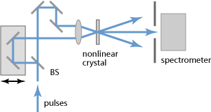
ABCD matrix
absorption spectroscopy → laser absorption spectroscopy
active mode locking
active Q switching → Q switching
active stabilization of lasers → stabilization of lasers
add–drop multiplexers → wavelength division multiplexing
anti-Stokes fluorescence cooling → optical refrigeration
asynchronous sampling → optical sampling
atmospheric correction → laser guide stars
attosecond pulse spectroscopy → time-resolved spectroscopy
balanced photodetection
beam combining
cavity design → resonator design
chirped-pulse amplification
circle of confusion → imaging with a lens
coherent beam combining
coherent detection → optical heterodyne detection
coherent time-resolved spectroscopy → time-resolved spectroscopy
comb spectra → frequency combs
coupled-mode theory → mode coupling
dechirping → pulse compression
delayed self-heterodyne interferometer → self-heterodyne linewidth measurement
differential photodetection → balanced photodetection
dispersion compensation
dispersion management
dispersive pulse compression → pulse compression
distance measurements with lasers
divided-pulse amplification
domain engineering → periodic poling
domain inversion → periodic poling
domain-patterned semiconductors → orientation-patterned semiconductors
Doppler cooling
doubly resonant cavities → resonant frequency doubling
dressed states → Sisyphus cooling
electric-field poling → periodic poling
electro-optic field mapping → electro-optic sampling
electro-optic sampling
end pumping
eye protection
f–2f interferometer → frequency combs
ferroelectric domain engineering → periodic poling
fiber simulation software
fluorescence microscopy
fluorescence spectroscopy
fluorescent cooling → optical refrigeration
FM mode locking → mode locking
Fourier transform spectral phase interferometry → spectral phase interferometry
Fourier transform spectroscopy
frequency combs
frequency domain interferometry → spectral phase interferometry
frequency-resolved optical gating
frequency synthesizers → frequency combs
giant pulses → Q switching
Giles parameters
goggles → eye protection
grating compressors → pulse compression
GRISMs → dispersion compensation
guide stars → laser guide stars
harmonic mode locking
Haus Master equation
heterodyne detection → optical heterodyne detection
holography
homodyne detection → optical heterodyne detection
hybrid mode locking → mode locking
imaging
imaging with a lens
in-band pumping → optical pumping
infrared spectroscopy → spectroscopy
infrared thermography → thermal imaging
injection locking
injection seeding
intracavity laser absorption spectroscopy
Kerr lens mode locking
key distribution → quantum cryptography
laser absorption spectroscopy
laser beam combining → beam combining
laser cooling
laser design
laser development
laser distance meters → distance measurements with lasers
laser goggles → eye protection
laser guide stars
laser hazards → laser safety
laser marking
laser microscopy
laser modeling
laser radar → LIDAR
laser refrigeration → optical refrigeration
laser resonator design → resonator design
laser safety
laser specifications
laser spectroscopy
LIDAR
light detection and ranging → LIDAR
light forces
longitudinal pumping → end pumping
manufacturing of optics → optical fabrication
master equation → Haus master equation
mode coupling
mode locking
mode solvers → fiber simulation software
modeling → laser modeling
multiphoton microscopy → fluorescence microscopy
nanoscopy → laser microscopy
no-cloning theorem → quantum cryptography
noise reduction → stabilization of lasers
noncritical phase matching
nonlinear mirror mode locking → mode locking
nonlinear pulse compression → pulse compression
numerical modeling → pulse propagation modeling
OP-GaAs → orientation-patterned semiconductors
optical coherence tomography
optical fabrication
optical frequency synthesizers → frequency combs
optical heterodyne detection
optical images → imaging
optical imaging → imaging
optical parametric chirped-pulse amplification
optical pulse generation → pulse generation
optical pumping
optical refrigeration
optical rulers → frequency combs
optical sampling
optical time-domain reflectometers
optical traps → light forces
optical tweezers
orientation-patterned semiconductors
passive mode locking
passive Q switching → Q switching
periodic poling
phase matching
phase mismatch → phase matching
phase shift method for distance measurements
phase synchronization of lasers → synchronization of lasers
photoacoustic spectroscopy → spectroscopy
photoconductive sampling
polarization beam combining
polarization coupling → polarization beam combining
polarization gradient cooling → Sisyphus cooling
power scaling of lasers
prism pairs
pulse compression
pulse generation
pulse propagation modeling
pump–probe measurements
pump–probe spectroscopy → time-resolved spectroscopy
Q-switched mode locking
Q switching
QML threshold → Q-switched mode locking
quantum beat spectroscopy → time-resolved spectroscopy
quantum cryptography
quantum key distribution
quasi-phase matching
radiance scaling of lasers → power scaling of lasers
Raman spectroscopy
range finding → distance measurements with lasers
rate equation modeling
rational harmonic mode locking → active mode locking
ray transfer matrix → ABCD matrix
reciprocity method
recirculating fiber loops
regenerative mode locking → active mode locking
remote ranging → distance measurements with lasers
resonant frequency doubling
resonant second-harmonic generation → resonant frequency doubling
resonator design
rubber band model → frequency combs
safety → laser safety
safety glasses → eye protection
sampling → electro-optic sampling
scalability → power scaling of lasers
scaling procedures → power scaling of lasers
self-heterodyne linewidth measurement
self-injection locking → injection locking
self-referenced frequency combs → frequency combs
sequential sampling → electro-optic sampling
side pumping
singly resonant cavities → resonant frequency doubling
Sisyphus cooling
sodium guide stars → laser guide stars
soft aperture mode locking → Kerr lens mode locking
soliton compression → pulse compression
soliton mode locking
specifications for lasers → laser specifications
spectral beam combining
spectral phase interferometry
spectrometry → spectroscopy
spectroscopy
split-step Fourier technique → pulse propagation modeling
stabilization of lasers
stimulated emission depletion microscopy → fluorescence microscopy
supermodes → harmonic mode locking
symmetrized split-step Fourier method → pulse propagation modeling
synchronization of lasers
synchronous pumping
temperature phase matching → noncritical phase matching
terahertz spectroscopy → optical sampling
thermal imaging
time division multiplexing
time domain spectroscopy → Fourier transform spectroscopy
time-of-flight measurements
time-resolved spectroscopy
timing synchronization → synchronization of lasers
transient absorption spectroscopy → time-resolved spectroscopy
triangulation
tweezers → optical tweezers
twisted-mode technique
two-photon microscopy → fluorescence microscopy
type I or type II phase matching → phase matching
ultrafast spectroscopy → time-resolved spectroscopy
wavelength beam combining → spectral beam combining
wavelength division multiplexing
wavelength tuning
z-scan measurements
Zeeman slowing → Doppler cooling
Physical foundations
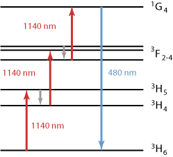
absorption cross sections → transition cross sections
absorption efficiency → pump absorption
absorption saturation → pump absorption
adjoint modes → resonator modes
allowed transitions → forbidden transitions
alpha factor → linewidth enhancement factor
amplifier transitions → laser transitions
axial modes → resonator modes
band gap
bandwidth
birefringent walk-off → spatial walk-off
blackbody radiation → thermal radiation
breakdown → laser-induced breakdown
carrier lifetime → upper-state lifetime
causality
cavity bandwidth → resonator modes
cavity modes → resonator modes
cavity resonances → resonator modes
chemiluminescence
color centers
colorimetry
concentration quenching → quenching
conical emission → laser-induced breakdown
cross relaxation → energy transfer
cross sections → transition cross sections
damage threshold → laser-induced damage
dark current
dispersion relations → Kramers–Kronig relations
Doppler broadening
effective cross sections → effective transition cross sections
effective transition cross sections
electro-optic effect
electro-optics
electroluminescence
emission cross sections → transition cross sections
emission linewidth → linewidth
emission spectrum → optical spectrum
energy migration → energy transfer
energy transfer
entangled states → photons
excited-state absorption
fast light → superluminal transmission
faster than light → superluminal transmission
fiber simulation software
fluorescence
fluorescence lifetime → upper-state lifetime
fluorescence quenching → quenching
forbidden transitions
Frantz–Nodvick equation → gain saturation
Füchtbauer–Ladenburg equation
gain compression → gain saturation
gain guiding
gain narrowing
gain saturation
Henry factor → linewidth enhancement factor
homogeneous broadening
homogeneous saturation
incandescence → thermal radiation
induced focusing → thermal lensing
inhomogeneous broadening
inhomogeneous saturation
intensity-to-phase coupling → linewidth enhancement factor
interference
inversion → population inversion
Kerr constant → Kerr effect
Kerr effect
Kerr lens
Kerr nonlinearity → Kerr effect
Kramers–Kronig relations
laser cross sections → transition cross sections
laser-induced breakdown
laser-induced damage
laser linewidth → linewidth
laser modeling
laser physics
laser transitions
left-handed metamaterials → photonic metamaterials
light
linewidth
linewidth enhancement factor
luminescence
luminescence quenching → quenching
McCumber theory
metamaterials → photonic metamaterials
metastable states
mode competition
mode solvers → fiber simulation software
modeling → laser modeling
monochromaticity → linewidth
multi-phonon transitions
multimode beams
multiphonon absorption
multiphoton absorption
multiphoton ionization → laser-induced breakdown
near field and far field
negative-index materials → photonic metamaterials
non-radiative transitions
nonlinear polarization
nonlinear polarization waves → polarization waves
numerical modeling → pulse propagation modeling
optical bandwidth → bandwidth
optical breakdown → laser-induced breakdown
optical damage → laser-induced damage
optical damage threshold → laser-induced damage
optical frequency
optical interference → interference
optical phase
optical spectrum
pair-induced quenching → quenching
parametric nonlinearities
phase → optical phase
phase velocity
phonons
phosphorescence
photocurrent
photoelectric effect
photoemission → photoelectric effect
photoluminescence
photonic metamaterials
photons
Planck law → thermal radiation
plane waves
Pockels effect
polarization waves
population inversion
Poynting vector walk-off → spatial walk-off
propagation losses
pulse propagation modeling
pump absorption
quantum defect
quantum efficiency
quantum yield → quantum efficiency
quenching
Rabi frequency → Rabi oscillations
Rabi oscillations
radiance
radiation pressure
radiative lifetime
radioluminescence → luminescence
Raman effect → Raman scattering
Raman gain
Raman scattering
rate equation modeling
reciprocity method
resonator bandwidth → resonator modes
resonator modes
saturated output power → saturation power
saturation energy
saturation fluence → saturation energy
saturation intensity → saturation power
saturation of absorption → pump absorption
saturation of gain → gain saturation
saturation power
self-steepening → Kerr effect
slow light → velocity of light
small-signal gain
spatial hole burning
spatial walk-off
spectral linewidth → linewidth
spectral radiance → radiance
spectral width → bandwidth
spectrum → optical spectrum
speed of light → velocity of light
split-step Fourier technique → pulse propagation modeling
spontaneous Raman scattering → Raman scattering
standing wave pattern → interference
stimulated emission
stimulated emission cross sections → transition cross sections
stimulated Raman scattering → Raman scattering
superluminal transmission
superluminescence
symmetrized split-step Fourier method → pulse propagation modeling
t-waves → terahertz radiation
TEM modes → resonator modes
terahertz radiation
thermal lensing
thermal radiation
third-order dispersion
transition cross sections
transitions → laser transitions
two-photon absorption
upconversion
upconversion quenching → quenching
upper-state lifetime
vacuum velocity of light → velocity of light
velocity of light
visible light → light
walk-off angle → spatial walk-off
walk-off compensation → spatial walk-off
weakly allowed transitions → forbidden transitions
zero-phonon transition → McCumber theory